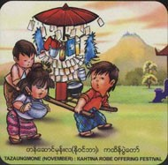

Festivals
- Horsemanship
- Htamaneipwe
- Sand Pagodas
- Thingyan
- Kason Nyaungyaltwinpwe
- Sar Pyan Pwe
- Wa So Pwe
- Sar Yale Tan Mal Pwe
- Hlay Pyaing pwe
- Mee Tun Pwe
- Ka Htain Pwe
- Sarsodaw
Months
- January
- February
- March
- April
- May
- June
- July
- August
- September
- October
- November
- December
|
Tazaungmon (November)

It is the eighth Myanmar month (in October-November) time for Kathina, Matho Thingan 0ffering, Pantthagu offering, lotus robe offering, lighting and Shin Malai festivals.
Kathina monk's robes are offered at this particular time of the year. It is held mostly communally. Matho thingan meaning non-stale monk's's robes are
ones made overnight and offered before dawn. Pantthagy offering means leaving offertories at any public place for anyone's taking. Lotus robes mean those with
golden lotus designs offered to Buddha or at pagodas. Tazaungmon is for another lighting festival, taken to be astrologically most opportune. Shin Malai festival
originated in Shin Malai's Preaching of Wesandara Jataka on the full-moon day. It is marked by making floats in the shape of barges, putting on it a thousand fruits,
a thousand flower, a thousand lumps of rics and a thousand lights to go round before offering at pagodas. It is also called the barge festival or thousand-ful
festival. It has been on the wane. There is also a practice of eating salads of mezali leaves with belief that it is medicinal particularly
at this time of the year.
|